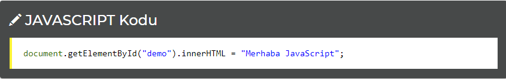

JAVASCRİPT NEDİR?
Javascript kısaca JS, İnternetin emekleme döneminde piyasaya sürülen bir programlama dilidir. 20 yıllık bir geçmişe sahip olan Javascript, HTML işaretleme diline destek olması için Netscape firmasının çalışanı Brendan Eich tarafından geliştirilmiştir.
JavaScript popüler bir programlama dilidir. HTML dili ile birlikte kullanılır. İnternette, bilgisayarlarda, tabletlerde ve telefonlarda çalışır. Günümüzde JavaScript desteklemeyen bir tarayıcı kalmamıştır. Javascript, web programlama ile ilgilenenler ve internet sitesi hazırlamaya başlamak isteyenler için bilmeleri gereken bir dildir. Javascript sayfalarınızın işlevsel olmasını sağlar. Kullanıcı ile tarayıcı arasında bir köprü görevi görür. JavaScript'in kısaca işlevlerinden bahsedelim:
• HTML tasarımcılarına bir programlama desteği sağlar, bünyesinde değişkenler, fonksiyonlar, döngüler, yordamlar bulundurur.
• HTML sayfalarına hareketli HTML nesneleri (metin, resim, vb.) koyabilmemizi sağlar.
• Olaylara tepki verir. ( tıklamak, tuşa basmak, sayfa açmak gibi şeyler.)
• HTML elemanlarını okuyabilir veya yazabilir.
• Kullanıcı ile bilgi alışverişinde bulunmamızı sağlar. Zira HTML formları JavaScript (VB Script) olmadan pek bir işe yaramaz.
Javascript HTML Elementlerini Değiştirir
HTML DOM, W3C uyumlu bir HTML elementleri erişim sistemidir. JavaScript HTML ile uyumlu olarak DOM'u değiştirir.
Örneğin aşağıdaki örnek id="demo" olan elementin içeriğini (innerHTML) değiştirmeye yarıyor:
Örnek
Bu yöntem kullanılan yüzlerce yöntemden biridir.
Mesela bir örnek verelim.Butona tıklandığında bize zamanı ve saati göstersin!!!
My First JavaScript
Yazım kuralları
1)Javascriptte bütün değişkenler Harf yada (_) altçizgi ile başlar. Rakam ile başlayamaz.2)Değişken isimleri 255 karakter uzunluğundan fazla olamaz.
3)Javascript’te büyük küçük harf duyarlılığı vardır. Deger isimli değişeken ile deger isimli değişken farklı algılanır.
4)Türkçe karakter kullanılamaz.(ı,ş,ğ,ü,ö,ç)
5)Değişkenler var ifadesiyle tanımlanır.
6)Sabit bir değişkeni const SABİT_DEGER şeklinde tanımlamalısınız. Const yazımı yanlıştır.(madde 3).
7)İfade tanımlarında anahtar kelimeler kullanılamaz. (if, for, while vs.)
8))Açılan süslü parantezlerin kapatılması gerekmektedir. ( { } )
9Javascriptte ‘(tek tırnak) ile “(çift tırnak) işareti arasında işlevsel bakımdan fark yoktur. Ancak iç içe kullanımda birbiriyle çakışmamasına özen gösterilmelidir.
Açıklama satırları kullanımı
Açıklama satırları hem bizim hemde kodu okuyan başka birinin kodların işlevini anlaması için önemlidir. Kullanımı aşağıda gösterilmiştir.
// Tek satır açıklama.
/*
çok satır
açıklama
*/